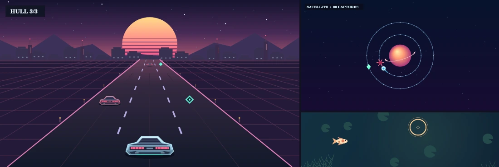

SideQuest
A little arcade for the moments you’re waiting on ChatGPT.
Send a message, pick up a game, and return when your reply is ready. SideQuest opens inside your chat, with 50 short games to discover.

Download SideQuest · Installation · Privacy · FAQ
How it works
- Send a message. If ChatGPT is still generating after about 5½ seconds, SideQuest offers a game.
- Play while you wait. Start a random game immediately or browse the library. Your choice is remembered.
- Return when you're ready. When SideQuest detects the reply has finished, the game pauses. Return to chat or keep playing.
The arcade floats over your conversation. Move it, resize it, or switch to full screen. SideQuest remembers your window size and position.
Invitations depend on the controls ChatGPT displays. Quick replies may finish before the invitation appears, and some ChatGPT layouts or languages may behave differently.
Install on a computer
Use Google Chrome on a computer, or another desktop browser that can load Chrome extensions, such as Microsoft Edge or Brave. Open ChatGPT in that browser. SideQuest works from a folder on your computer. Installation takes a few clicks and requires no terminal commands.
- Download and unzip SideQuest. Find the downloaded ZIP on your computer. On Windows, right-click it and choose Extract All. On Mac, double-click it. Move the extracted files somewhere you can keep them, such as your Documents folder.
- Open your browser’s extensions page. In the address
bar, type
chrome://extensions(Chrome),edge://extensions(Edge), orbrave://extensions(Brave), then press Enter. - Turn on Developer mode at the top of that page. Click Load unpacked. In the folder picker, open the extracted files and select the folder named SideQuest. To recognize the right folder, look inside for a file called manifest.json. Select the folder itself.
- Refresh your ChatGPT tab. To check the installation immediately, open the browser’s Extensions menu near the address bar, click SideQuest, then Open arcade. Pin the lightning icon if you’d like a shortcut.
The downloaded folder includes the source and an offline guide alongside the extension. Keep the folder in place after installing.
Explore the arcade
- 50 short games across four collections, with rounds of up to 35 seconds.
- Save favorites with the ☆ beside Pause. Find them later under Saved.
- Try another game with the dice button after a round, or choose Play again to replay the same one.
- Browse at your pace by clearing Play a random game on the invitation. SideQuest remembers your choice and features a different game each time you open the library.
You can dismiss an invitation or snooze it. To open the arcade yourself, click the SideQuest toolbar icon and choose Open arcade.
Make the game window yours
| To… | Do this |
|---|---|
| Move the window | Drag the Move arcade handle along the top. |
| Make it bigger or smaller | Drag either triangular lower corner. From the default upper-right position, drag the lower-left corner down and left to grow into the page. |
| Adjust it with a keyboard | Tab to Move arcade. Use arrow keys to move and Shift + arrow keys to resize. |
| Start in full screen | Open the SideQuest toolbar icon and select Full screen under Game window. Expand also enlarges the current round. |
| Restore the original layout | Click Reset window in the floating title bar, or Reset floating window in the toolbar. This restores the default size and upper-right position. |
The floating window remembers its last size and position in this browser profile. If the browser gets smaller, SideQuest fits the window back inside the tab. The reset only affects window placement and size.
What SideQuest can see
The browser gives SideQuest permission to run on pages at chatgpt.com. That is meaningful access: a script on this site can interact with the visible page. This version uses that access to watch controls like Send and Stop, recognize when a new reply has finished, and display the arcade. It compares temporary turn identifiers in memory. It does not read or save the text of prompts or replies, send messages on your behalf, or access your account cookies.
The games, artwork, and sound run locally. SideQuest has no server, analytics, external game downloads, or SideQuest account. Your browser saves your favorites, sound and motion preferences, recently featured games, snooze expiry, launch choices, and four numbers for the floating window’s size and position. This describes the distributed SideQuest code; ChatGPT continues to handle your conversations under its own terms. Use a copy from a publisher you trust.
Frequently asked questions
Why did the browser ask for Developer mode?
This download is an unpacked extension. Developer mode exposes the
Load unpacked button so the browser can install it from
a folder. Installing the release does not require an API key, payment,
or your ChatGPT password.
I installed it. Why didn’t a game appear?
Quick answers often finish before the invitation timer. Refresh an
already-open ChatGPT tab once after installing. Keep that tab visible
during a longer reply, and check the SideQuest toolbar for a snooze.
Open arcade is a quick way to check the installation
independently of reply detection.
Does it work in every chat, or in the phone
app?
It targets ChatGPT conversations on the website, including Chat and
Work. Automatic invitations depend on the controls ChatGPT displays.
Some layouts, languages, and background tasks may expose different
signals. The download is intended for Chrome and other desktop browsers
that can load unpacked Chrome extensions. It doesn’t install into the
native ChatGPT app.
What happens when I close the game?
Return to chat closes the arcade and returns focus to
the conversation. Keep playing resumes the paused
round. Moving to another conversation closes the overlay. Window
placement and preferences carry over; a closed round ends.
How do I play without sound or with a
keyboard?
Music starts muted. The arcade settings let you adjust music, sound
effects, and visual motion. Games show their own controls and support
pointer or keyboard input. Try arrow keys, WASD or ZQSD. In supported
Signal puzzles, V reads the board. Action games rely on
the visual playfield.
How do I update or uninstall?
To update, replace the contents of the same SideQuest
folder with the new version, click Reload on
the extensions page, then refresh your ChatGPT tabs. Keeping the
original folder path helps preserve local preferences. To uninstall,
click Remove on the SideQuest card on the extensions
page, then refresh any open chat tabs. You can delete the extracted
folder afterward.
Can I share or modify it?
Yes, for permitted noncommercial purposes under PolyForm
Noncommercial 1.0.0. Pass along the license or its URL and
applicable notices. The same terms cover the bundled artwork and icons.
Commercial licensing requires separate permission. Official
license terms
How do I report a bug without sharing my chat?
Use the repository’s Issues tab. Include the SideQuest and browser
versions, Chat or Work mode, what you clicked, and what you expected. A
fictional prompt is enough. If you add an image, crop it to the
extension and remove names, conversation text, and private URLs.
SideQuest is an independent project. It is unaffiliated with OpenAI.